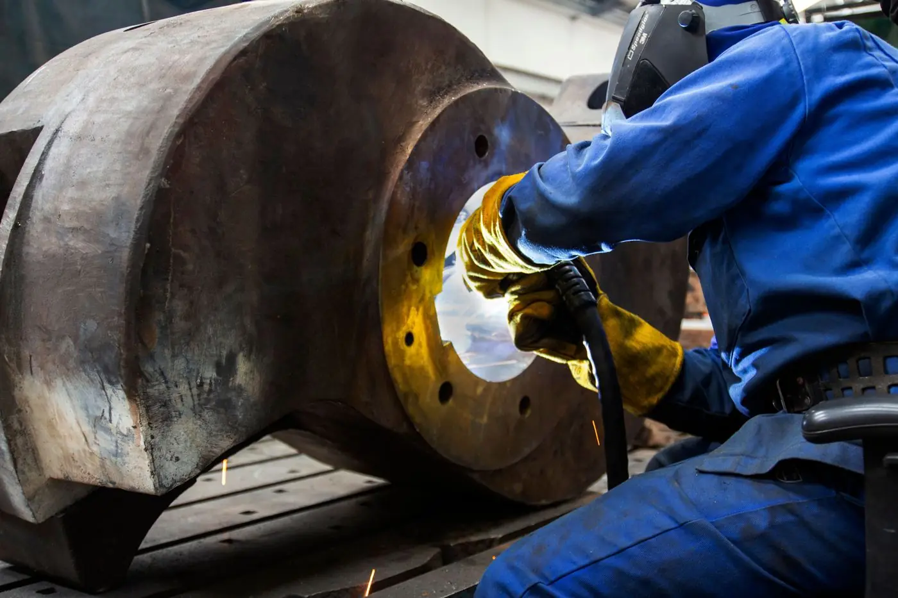
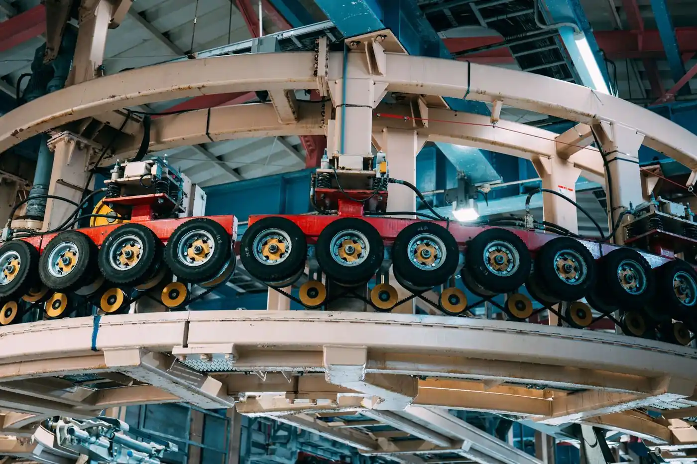
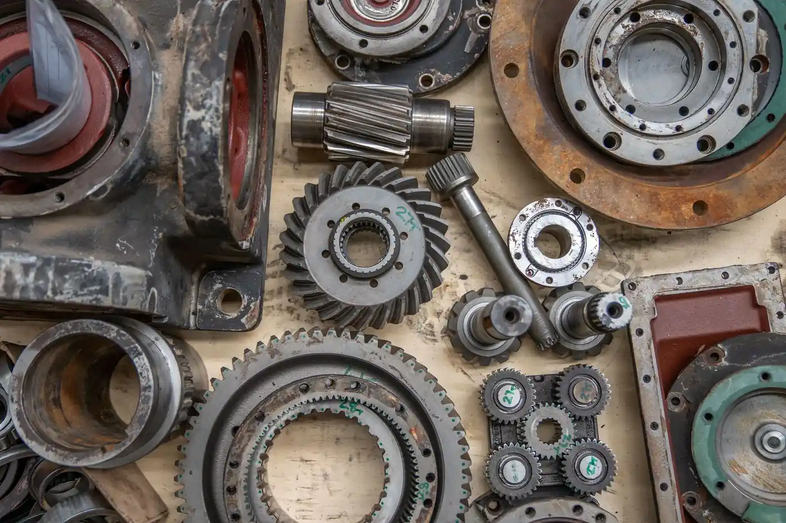
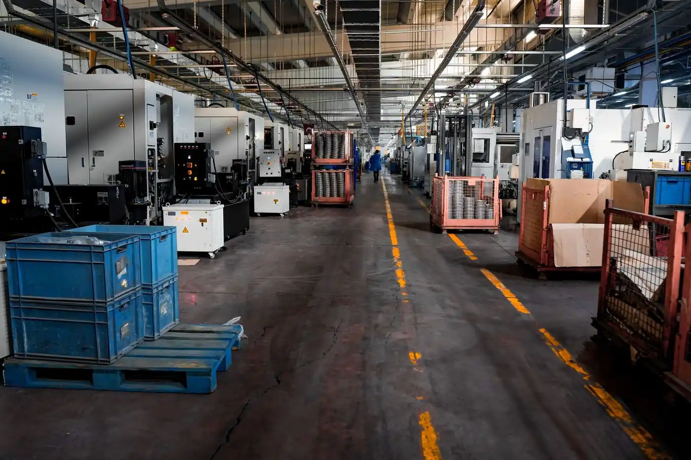
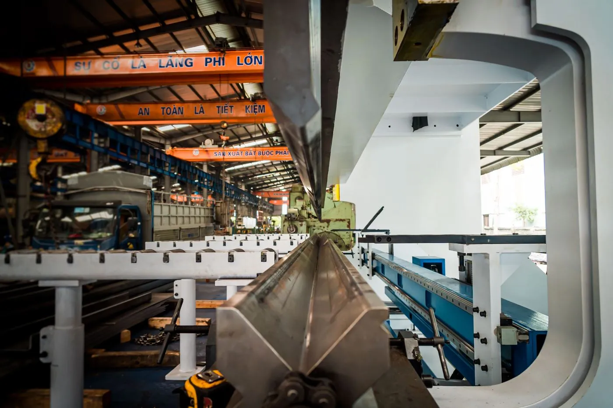

Production
0% pulse
Stackly connects production, machinery, quality and operational intelligence into one clear system — helping manufacturers see problems earlier, make better decisions and improve continuously.





The factory constantly produces signals. Stackly turns those signals into useful decisions.

One operational picture.

Tap a material to see how Stackly tracks it on the floor.

Structural and tool-grade steel tracked from pour to part, with density and hardness readings logged against every batch.

Extrusion temperature and surface finish are monitored in real time, catching warping before it reaches inspection.

Autoclave pressure and flex tolerance are logged per weave, flagging any cure cycle that drifts from spec.

Trace tolerance and component density are checked at every panel, with defects traced back to the exact reflow cycle.
Every sensor on the floor produces the same thing — a number that moved. What separates a busy dashboard from a useful one is what happens next: Stackly reads that number in context, weighs it against everything else happening on the line, and hands your team one clear next step instead of another chart to interpret.


A multi-site manufacturer replaced disconnected reporting with one operational view across production, quality and maintenance.
Read the transformation
"We used to find out a line had stalled from a supervisor's radio call. Now the risk shows up before the line actually stops."
"The quality drift alerts caught a calibration issue three shifts before it hit our scrap numbers. It paid for the quarter in one catch."
"Rolling this out across nine sites was the part I worried about most. It connected to legacy PLCs we'd basically written off."
"The recommended action tells a technician what to inspect and how long they have — not just that something looks off."
Ideas from people who build, operate and improve things.
PLCs, SCADA, MES, ERP, and most sensor networks already running on the floor — connected through open industrial protocols.
Yes. Stackly is designed to sit alongside legacy equipment rather than replace it, reading signals from what's already installed.
Most sites see their first live dashboards within the first weeks of connection, with deeper models improving over time.
Stackly is built for multi-site operations from the ground up, with one operational view across every plant you run.
Models are trained on your own operational data, so recommendations reflect how your specific lines actually behave.
Your factory already contains the signals. Stackly helps you turn them into better decisions.